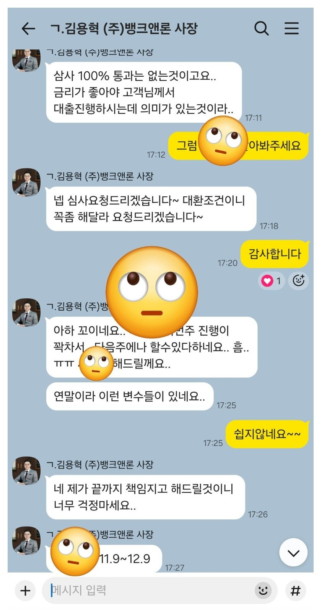
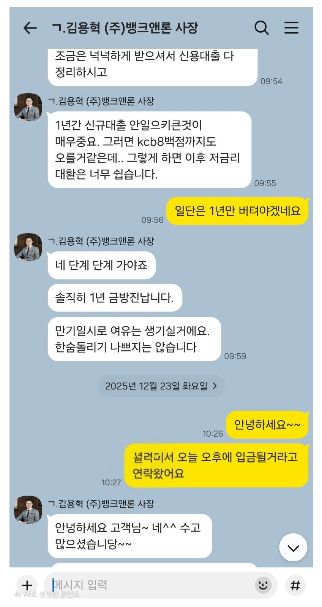
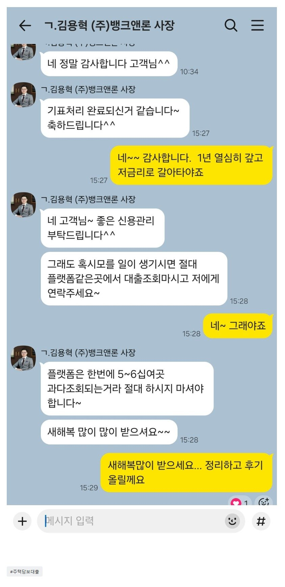

[주택담보대출] 기대출과다, 저신용중 후순위담보대출 12% 5천만 승인 / 김용혁대표님 감사합니다
직장인
근무년수 2년
기대출 건수 6건(현금서비스 및 카드론 포함)
대출이 많다 보니 한달에 내야하는 이자부담이 너무 심해서 담보대출로 기대출 정리하고자 뱅크앤론 문을 두드리고
예전에도 대표님을 통해 대출진행한적이 있던터라 상담 받았습니다.
금액도 금액이지만 건수가 많다보니 담보대출도 쉽지 않은 상황에서 빠르게 여러곳 알아봐주셔서
지난주 금요일에 서류접수하고 오늘 입금 받아서 기존에 있던 대출 정리했네요
전체적인 금액이 줄어든건 아니지만 일단 건수도 줄고 이자부담도 많이 줄다보니 한숨 돌리게 되었습니다.
이제부터 더이상 대출 늘리지 않고 신용관리 잘해서 저금리로 갈아타야죠. 그때도 잘 부탁드리겠습니다.



https://cafe.naver.com/cityman88/309765